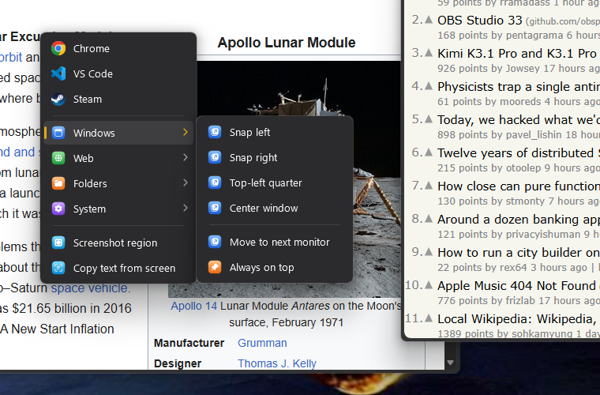
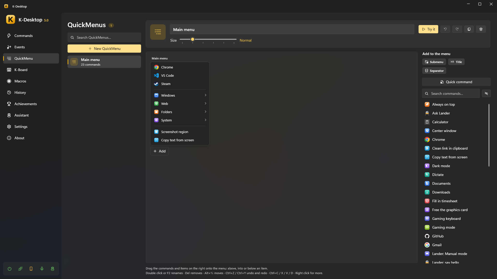
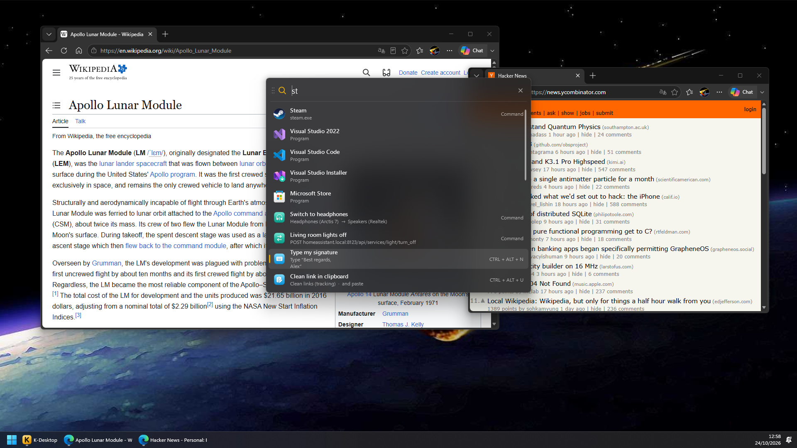
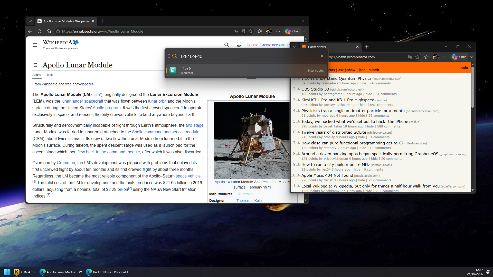

QuickMenu and launcher
QuickMenu
A QuickMenu is a menu with your commands that opens where the mouse is: cascading submenus, icons, an acrylic background and keyboard navigation.

- Open it from a command with the action Open QuickMenu (give that command a hotkey such as
Mouse 4 + Mouse 1), from the phone or withKDesktop.exe --menu "Name". - Use it: left click runs and closes, right click runs and keeps the menu open, middle click edits that item. With the keyboard: arrows, Enter and Esc.
- Close it with Esc or a click outside (K-Desktop's window too). Its hotkey again closes it if the mouse is over the menu; if not, it opens it again where the mouse is.
- Size: from Compact to Huge, per menu.
Editing
In QuickMenu, drag commands from the list on the right onto the menu: above, into or below an item. Items can be commands, submenus and separators, each with its own name and icon if you want.

- Quick command creates a command from a program, a file, a folder or a web page and adds it in one go; you can refine it later in Commands.
- Double click or F2 renames, Del removes, Alt+↑↓ moves, Ctrl+Z / Ctrl+Y undo and redo, Ctrl+C / X / V / D copy, cut, paste and duplicate; right click for more.
- Try it opens the menu as it will look, and the lightning button creates a command that opens it (to give it a hotkey or a voice phrase).
- The button next to Add to the menu hides that panel for more room. The mouse wheel moves the menu sideways; if it is also taller than the space, the wheel moves it up and down, and Ctrl + wheel sideways.
AI menu
Create AI menu (under New QuickMenu) creates the QuickMenu «AI» with seven commands for whatever you have selected:
Translate and Correct paste the answer over the selection; Summarize, Explain and Reply show it on a
sheet. Each one is an Assistant: ask action with {selection} that K-Desktop answers. Read aloud is an
Assistant: say with {selection}: K-Desktop reads it with its voice. Translate the screen needs no
selection: you pick an area with the mouse, Copy text from the screen reads its text and Assistant: ask translates
it on a sheet (with {result}). In each command you can change
the text, the answer or choose another assistant. It also creates the command «AI menu», which opens it: give it a
hotkey. It needs the Assistant module on and a brain.
Launcher
The launcher is a search box with its own hotkey (Settings → Launcher). Type part of a name —initials or loose letters work: «cmfy» finds ComfyUI— choose with ↑ ↓ and press Enter. Esc, or the same hotkey, closes it.

It finds:
Your commands, hidden ones too if you want.
Programs of the Start menu, Store apps included.
Sums: type
12*3.5and Enter copies the result.
What you copied (Clipboard history): what in the history has what you typed; Enter pastes it where you were.
Files and folders: the ones named like what you typed, from the Windows search index and your folders (Desktop, Documents, Downloads…). They show a moment later, at the end. Start with
?to search only files (?electricity bill). Enter opens it and Ctrl+Enter opens the folder it is in.The web: when nothing better matches, it offers to search the web (with the search engine you choose).
With Most used first, what you use most comes first and shows before you type anything.